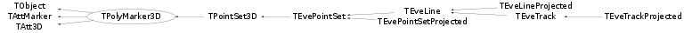

class TPolyMarker3D: public TObject, public TAttMarker, public TAtt3D
PolyMarker3D is a 3D polymarker. It has three constructors. First one, without any parameters TPolyMarker3D(), we call 'default constructor' and it's used in a case that just an initialisation is needed (i.e. pointer declaration). Example: TPolyMarker3D *pm = new TPolyMarker3D; Second one, takes, usually, two parameters, n (number of points) and marker (marker style). Third parameter is optional. Example: TPolyMarker3D (150, 1); Third one takes, usually, three parameters, n (number of points), *p (pointer to an array of 3D points), and marker (marker style). Fourth parameter is optional. Example: Float_t *ptr = new Float_t [150*3]; ... ... ... ... ... ... ... ... ... TPolyMarker3D (150, ptr, 1);
Function Members (Methods)
public:
| TPolyMarker3D() | |
| TPolyMarker3D(const TPolyMarker3D& p) | |
| TPolyMarker3D(Int_t n, Marker_t marker = 1, Option_t* option = "") | |
| TPolyMarker3D(Int_t n, Float_t* p, Marker_t marker = 1, Option_t* option = "") | |
| TPolyMarker3D(Int_t n, Double_t* p, Marker_t marker = 1, Option_t* option = "") | |
| virtual | ~TPolyMarker3D() |
| void | TObject::AbstractMethod(const char* method) const |
| virtual void | TObject::AppendPad(Option_t* option = "") |
| virtual void | TObject::Browse(TBrowser* b) |
| static TClass* | Class() |
| virtual const char* | TObject::ClassName() const |
| virtual void | TObject::Clear(Option_t* = "") |
| virtual TObject* | TObject::Clone(const char* newname = "") const |
| virtual Int_t | TObject::Compare(const TObject* obj) const |
| virtual void | Copy(TObject& polymarker) const |
| virtual void | TObject::Delete(Option_t* option = "")MENU |
| virtual Int_t | DistancetoPrimitive(Int_t px, Int_t py) |
| virtual void | Draw(Option_t* option = "") |
| virtual void | TObject::DrawClass() constMENU |
| virtual TObject* | TObject::DrawClone(Option_t* option = "") constMENU |
| virtual void | DrawPolyMarker(Int_t n, Float_t* p, Marker_t marker, Option_t* option = "") |
| virtual void | TObject::Dump() constMENU |
| virtual void | TObject::Error(const char* method, const char* msgfmt) const |
| virtual void | TObject::Execute(const char* method, const char* params, Int_t* error = 0) |
| virtual void | TObject::Execute(TMethod* method, TObjArray* params, Int_t* error = 0) |
| virtual void | ExecuteEvent(Int_t event, Int_t px, Int_t py) |
| virtual void | TObject::Fatal(const char* method, const char* msgfmt) const |
| virtual TObject* | TObject::FindObject(const char* name) const |
| virtual TObject* | TObject::FindObject(const TObject* obj) const |
| virtual Option_t* | TObject::GetDrawOption() const |
| static Long_t | TObject::GetDtorOnly() |
| virtual const char* | TObject::GetIconName() const |
| virtual Int_t | GetLastPoint() const |
| virtual Color_t | TAttMarker::GetMarkerColor() const |
| virtual Size_t | TAttMarker::GetMarkerSize() const |
| virtual Style_t | TAttMarker::GetMarkerStyle() const |
| virtual Int_t | GetN() const |
| virtual const char* | GetName() const |
| virtual char* | TObject::GetObjectInfo(Int_t px, Int_t py) const |
| static Bool_t | TObject::GetObjectStat() |
| virtual Option_t* | GetOption() const |
| virtual Float_t* | GetP() const |
| virtual void | GetPoint(Int_t n, Float_t& x, Float_t& y, Float_t& z) const |
| virtual void | GetPoint(Int_t n, Double_t& x, Double_t& y, Double_t& z) const |
| virtual const char* | TObject::GetTitle() const |
| virtual UInt_t | TObject::GetUniqueID() const |
| virtual Bool_t | TObject::HandleTimer(TTimer* timer) |
| virtual ULong_t | TObject::Hash() const |
| virtual void | TObject::Info(const char* method, const char* msgfmt) const |
| virtual Bool_t | TObject::InheritsFrom(const char* classname) const |
| virtual Bool_t | TObject::InheritsFrom(const TClass* cl) const |
| virtual void | TObject::Inspect() constMENU |
| void | TObject::InvertBit(UInt_t f) |
| virtual TClass* | IsA() const |
| virtual Bool_t | TObject::IsEqual(const TObject* obj) const |
| virtual Bool_t | TObject::IsFolder() const |
| Bool_t | TObject::IsOnHeap() const |
| virtual Bool_t | TObject::IsSortable() const |
| Bool_t | TObject::IsZombie() const |
| virtual void | ls(Option_t* option = "") const |
| void | TObject::MayNotUse(const char* method) const |
| virtual Int_t | Merge(TCollection* list) |
| virtual void | TAttMarker::Modify() |
| virtual Bool_t | TObject::Notify() |
| void | TObject::Obsolete(const char* method, const char* asOfVers, const char* removedFromVers) const |
| static void | TObject::operator delete(void* ptr) |
| static void | TObject::operator delete(void* ptr, void* vp) |
| static void | TObject::operator delete[](void* ptr) |
| static void | TObject::operator delete[](void* ptr, void* vp) |
| void* | TObject::operator new(size_t sz) |
| void* | TObject::operator new(size_t sz, void* vp) |
| void* | TObject::operator new[](size_t sz) |
| void* | TObject::operator new[](size_t sz, void* vp) |
| virtual void | Paint(Option_t* option = "") |
| static void | PaintH3(TH1* h, Option_t* option) |
| virtual void | TObject::Pop() |
| virtual void | Print(Option_t* option = "") const |
| virtual Int_t | TObject::Read(const char* name) |
| virtual void | TObject::RecursiveRemove(TObject* obj) |
| virtual void | TAttMarker::ResetAttMarker(Option_t* toption = "") |
| void | TObject::ResetBit(UInt_t f) |
| virtual void | TObject::SaveAs(const char* filename = "", Option_t* option = "") constMENU |
| virtual void | TAttMarker::SaveMarkerAttributes(ostream& out, const char* name, Int_t coldef = 1, Int_t stydef = 1, Int_t sizdef = 1) |
| virtual void | SavePrimitive(ostream& out, Option_t* option = "") |
| void | TObject::SetBit(UInt_t f) |
| void | TObject::SetBit(UInt_t f, Bool_t set) |
| virtual void | TObject::SetDrawOption(Option_t* option = "")MENU |
| static void | TObject::SetDtorOnly(void* obj) |
| virtual void | TAttMarker::SetMarkerAttributes()MENU |
| virtual void | TAttMarker::SetMarkerColor(Color_t tcolor = 1) |
| virtual void | TAttMarker::SetMarkerSize(Size_t msize = 1) |
| virtual void | TAttMarker::SetMarkerStyle(Style_t mstyle = 1) |
| virtual void | SetName(const char* name)MENU |
| virtual Int_t | SetNextPoint(Double_t x, Double_t y, Double_t z)MENU |
| static void | TObject::SetObjectStat(Bool_t stat) |
| void | SetPoint(Int_t n, Double_t x, Double_t y, Double_t z)MENU |
| virtual void | SetPolyMarker(Int_t n, Float_t* p, Marker_t marker, Option_t* option = "") |
| virtual void | SetPolyMarker(Int_t n, Double_t* p, Marker_t marker, Option_t* option = "") |
| virtual void | TObject::SetUniqueID(UInt_t uid) |
| virtual void | ShowMembers(TMemberInspector& insp) |
| virtual Int_t | Size() const |
| virtual void | TAtt3D::Sizeof3D() const |
| virtual void | Streamer(TBuffer& b) |
| void | StreamerNVirtual(TBuffer& b) |
| virtual void | TObject::SysError(const char* method, const char* msgfmt) const |
| Bool_t | TObject::TestBit(UInt_t f) const |
| Int_t | TObject::TestBits(UInt_t f) const |
| virtual void | TObject::UseCurrentStyle() |
| virtual void | TObject::Warning(const char* method, const char* msgfmt) const |
| virtual Int_t | TObject::Write(const char* name = 0, Int_t option = 0, Int_t bufsize = 0) |
| virtual Int_t | TObject::Write(const char* name = 0, Int_t option = 0, Int_t bufsize = 0) const |
protected:
| virtual void | TObject::DoError(int level, const char* location, const char* fmt, va_list va) const |
| void | TObject::MakeZombie() |
| TPolyMarker3D& | operator=(const TPolyMarker3D&) |
Data Members
public:
| enum TObject::EStatusBits { | kCanDelete | |
| kMustCleanup | ||
| kObjInCanvas | ||
| kIsReferenced | ||
| kHasUUID | ||
| kCannotPick | ||
| kNoContextMenu | ||
| kInvalidObject | ||
| }; | ||
| enum TObject::[unnamed] { | kIsOnHeap | |
| kNotDeleted | ||
| kZombie | ||
| kBitMask | ||
| kSingleKey | ||
| kOverwrite | ||
| kWriteDelete | ||
| }; |
protected:
| Int_t | fLastPoint | The index of the last filled point |
| Color_t | TAttMarker::fMarkerColor | Marker color index |
| Size_t | TAttMarker::fMarkerSize | Marker size |
| Style_t | TAttMarker::fMarkerStyle | Marker style |
| Int_t | fN | number of points |
| TString | fName | name of polymarker |
| TString | fOption | options |
| Float_t* | fP | [3*fN] Array of X,Y,Z coordinates |
Class Charts
{kind=link}
{kind=link}
{kind=link}
{kind=link}

Function documentation
TPolyMarker3D(Int_t n, Marker_t marker = 1, Option_t* option = "")
3-D polymarker normal constructor with initialization to 0.
TPolyMarker3D(Int_t n, Float_t* p, Marker_t marker = 1, Option_t* option = "")
3-D polymarker constructor. Polymarker is initialized with p.
TPolyMarker3D(Int_t n, Double_t* p, Marker_t marker = 1, Option_t* option = "")
3-D polymarker constructor. Polymarker is initialized with p (cast to float).
Int_t DistancetoPrimitive(Int_t px, Int_t py)
Compute distance from point px,py to a 3-D polymarker. Compute the closest distance of approach from point px,py to each segment of the polymarker. Returns when the distance found is below DistanceMaximum. The distance is computed in pixels units.
void DrawPolyMarker(Int_t n, Float_t* p, Marker_t marker, Option_t* option = "")
Draw this 3-D polymartker with new coordinates. Creates a new polymarker which will be adopted by the pad in which it is drawn. Does not change the original polymarker (should be static method).
void SavePrimitive(ostream& out, Option_t* option = "")
Save primitive as a C++ statement(s) on output stream.
void SetName(const char* name)
Change (i.e. set) the name of the TNamed. WARNING: if the object is a member of a THashTable or THashList container the container must be Rehash()'ed after SetName(). For example the list of objects in the current directory is a THashList.
Int_t SetNextPoint(Double_t x, Double_t y, Double_t z)
Set point following LastPoint to x, y, z. Returns index of the point (new last point).
void SetPoint(Int_t n, Double_t x, Double_t y, Double_t z)
Set point n to x, y, z. If n is more then the current TPolyMarker3D size (n > fN) then the polymarker will be resized to contain at least n points.
void SetPolyMarker(Int_t n, Float_t* p, Marker_t marker, Option_t* option = "")
Re-initialize polymarker with n points from p. If p=0 initialize with 0. if n <= 0 the current array of points is deleted.
void SetPolyMarker(Int_t n, Double_t* p, Marker_t marker, Option_t* option = "")
Re-initialize polymarker with n points from p. If p=0 initialize with 0. if n <= 0 the current array of points is deleted.
void GetPoint(Int_t n, Float_t& x, Float_t& y, Float_t& z) const
Fills the parameters x, y, z with the coordinate of the n-th point n must be between 0 and Size() - 1.
void GetPoint(Int_t n, Double_t& x, Double_t& y, Double_t& z) const
Fills the parameters x, y, z with the coordinate of the n-th point n must be between 0 and Size() - 1.